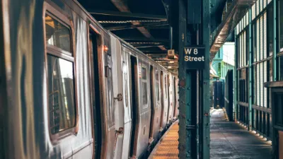

Metro de la Ciudad de México: Guía completa para usuarios

El Sistema de Transporte Colectivo Metro de la Ciudad de México es uno de los sistemas de transporte público más grandes y transitados del mundo. Inaugurado en 1969, actualmente cuenta con 12 líneas que recorren gran parte de la capital mexicana, transportando a millones de pasajeros diariamente. Esta guía te proporcionará toda la información necesaria para utilizar este medio de transporte de manera eficiente y segura.
Historia y evolución del Metro de la Ciudad de México
El Metro de la Ciudad de México fue inaugurado el 4 de septiembre de 1969 con la apertura de la Línea 1, que iba de Zaragoza a Chapultepec. Este proyecto, impulsado durante la presidencia de Gustavo Díaz Ordaz y la regencia de Alfonso Corona del Rosal, fue diseñado por el ingeniero mexicano Bernardo Quintana Arrioja, fundador de ICA, con la asesoría técnica de ingenieros franceses.
A lo largo de las décadas, el sistema ha experimentado una expansión constante:
- 1969-1972: Construcción de la Línea 1 (Observatorio-Pantitlán) y Línea 2 (Tacuba-Tasqueña)
- 1972-1985: Expansión con las líneas 3, 4 y 5
- 1985-1994: Construcción de las líneas 6, 7, 8 y 9
- 1994-2000: Inauguración de la Línea A (tren ligero)
- 2000-2012: Construcción de las líneas B y 12
Actualmente, el sistema cuenta con:
- 12 líneas (identificadas con números y letras)
- 195 estaciones
- 226 kilómetros de vías
- Capacidad para transportar aproximadamente 4.5 millones de pasajeros diariamente
Mapa y líneas del Metro
El sistema del Metro de la Ciudad de México está compuesto por las siguientes líneas, cada una identificada con un color distintivo:
- Línea 1 (Rosa): Observatorio - Pantitlán
- Línea 2 (Azul): Cuatro Caminos - Tasqueña
- Línea 3 (Verde olivo): Indios Verdes - Universidad
- Línea 4 (Cian): Martín Carrera - Santa Anita
- Línea 5 (Amarillo): Politécnico - Pantitlán
- Línea 6 (Rojo): El Rosario - Martín Carrera
- Línea 7 (Naranja): El Rosario - Barranca del Muerto
- Línea 8 (Verde): Garibaldi/Lagunilla - Constitución de 1917
- Línea 9 (Café): Tacubaya - Pantitlán
- Línea A (Morado): Pantitlán - La Paz
- Línea B (Verde y gris): Buenavista - Ciudad Azteca
- Línea 12 (Dorado): Mixcoac - Tláhuac
El mapa del Metro es un elemento icónico diseñado originalmente por Lance Wyman, utilizando un sistema de símbolos que facilita la navegación incluso para personas que no saben leer. Cada estación tiene un símbolo único relacionado con la historia, geografía o características del lugar donde se encuentra.
Horarios y tarifas
Horarios de servicio
- Lunes a viernes: 5:00 a.m. a 12:00 a.m.
- Sábados: 6:00 a.m. a 12:00 a.m.
- Domingos y días festivos: 7:00 a.m. a 12:00 a.m.
Es importante señalar que el último tren sale de las estaciones terminales aproximadamente a las 11:00 p.m., por lo que si planeas usar el Metro tarde, debes considerar este horario para evitar quedarte sin servicio.
Tarifas
El Metro de la Ciudad de México tiene una de las tarifas más económicas del mundo:
- Boleto unitario: 5 pesos mexicanos (permite realizar un viaje con los transbordos necesarios)
- Tarjeta recargable: 15 pesos (costo inicial de la tarjeta) más el saldo que desees agregar
Existen descuentos y gratuidad para ciertos grupos:
- Adultos mayores de 60 años con tarjeta INAPAM: gratuito
- Personas con discapacidad: gratuito
- Niños menores de 5 años: gratuito
Tarjeta de Movilidad Integrada
La Tarjeta de Movilidad Integrada es el medio de pago electrónico que permite acceder no solo al Metro, sino también a otros sistemas de transporte de la ciudad como:
- Metrobús
- Tren Ligero
- Cablebús
- RTP (algunos servicios)
- Ecobici (con registro adicional)
Puedes adquirir esta tarjeta en las taquillas del Metro y recargarla en las máquinas disponibles en las estaciones o en tiendas de conveniencia como OXXO y 7-Eleven.
Cómo utilizar el Metro
Ingreso al sistema
- Compra tu boleto en taquilla o utiliza tu Tarjeta de Movilidad Integrada
- Dirígete a los torniquetes de entrada
- Si usas boleto, insértalo en la ranura del torniquete (el boleto será retenido)
- Si usas tarjeta, acércala al lector hasta que escuches el pitido y veas la luz verde
- Cruza el torniquete cuando se desbloquee
Navegación dentro del sistema
- Identifica la línea y dirección que necesitas usando los mapas disponibles en las estaciones
- Sigue las señales y flechas que indican la dirección hacia los andenes
- En caso de transbordo, busca las señales que indican la conexión con otras líneas
- Espera el tren detrás de la línea amarilla marcada en el andén
- Permite que los pasajeros desciendan antes de abordar
Consejos para transbordar
Algunas estaciones de transbordo son particularmente grandes y pueden requerir caminatas considerables:
- Pantitlán: Conecta las líneas 1, 5, 9 y A. Es la estación con más afluencia y puede ser confusa para nuevos usuarios.
- Tacubaya: Conecta las líneas 1, 7 y 9. Tiene diferentes niveles y requiere subir/bajar escaleras.
- Hidalgo: Conecta las líneas 2 y 3. El transbordo es relativamente sencillo.
- Centro Médico: Conecta las líneas 3 y 9. Requiere una caminata considerable.
Para facilitar los transbordos, presta atención a las señales con flechas de colores que indican la dirección hacia cada línea.
Consejos de seguridad y etiqueta
Seguridad personal
- Mantén tus pertenencias siempre a la vista, especialmente en horas pico
- Evita mostrar objetos de valor como teléfonos costosos o joyas
- Utiliza los vagones exclusivos para mujeres y niños si te sientes más cómoda (primeros vagones)
- En caso de emergencia, utiliza los interfonos ubicados en los andenes y vagones
- Memoriza o anota el número de la policía del Metro: 5627-4571
Etiqueta en el Metro
- Cede el asiento a personas mayores, embarazadas, con niños pequeños o con discapacidad
- No bloquees las puertas del vagón
- Permite que los pasajeros desciendan antes de abordar
- Muévete hacia el interior del vagón para permitir que más personas puedan abordar
- No comas dentro de los vagones
- Evita reproducir música sin audífonos
Accesibilidad
El Metro de la Ciudad de México ha implementado diversas medidas para mejorar la accesibilidad, aunque aún enfrenta desafíos en este aspecto:
Instalaciones para personas con movilidad reducida
- Elevadores en algunas estaciones (principalmente en líneas más nuevas como la 12 y la B)
- Rampas de acceso en entradas seleccionadas
- Placas en braille en pasamanos y algunas señalizaciones
- Ranuras guía en el piso para personas con discapacidad visual
- Asientos reservados en cada vagón
Si tienes necesidades especiales de accesibilidad, es recomendable consultar previamente qué estaciones cuentan con las instalaciones adecuadas, ya que no todas están completamente adaptadas.
Consejos para turistas
Estaciones de interés turístico
- Bellas Artes (Líneas 2 y 8): Acceso al Palacio de Bellas Artes, Alameda Central y Centro Histórico
- Zócalo (Línea 2): Plaza de la Constitución, Catedral Metropolitana, Palacio Nacional
- Coyoacán (Línea 3): Cerca del centro histórico de Coyoacán y a distancia caminable del Museo Frida Kahlo
- Chapultepec (Línea 1): Acceso al Bosque de Chapultepec, Museo de Antropología y Castillo de Chapultepec
- Universidad (Línea 3): Ciudad Universitaria y estadio Olímpico
- Auditorio (Línea 7): Auditorio Nacional y Museo Soumaya
Recomendaciones para visitantes
- Evita las horas pico (7:00-9:00 a.m. y 6:00-8:00 p.m.) si es posible
- Descarga la aplicación oficial del Metro de CDMX o Google Maps para planificar tus rutas
- Considera comprar una Tarjeta de Movilidad Integrada si planeas usar el transporte público con frecuencia
- Ten a mano un mapa impreso del Metro como respaldo
- Aprende algunas frases básicas en español relacionadas con direcciones
- Mantén tus pertenencias seguras, especialmente en estaciones concurridas
Alternativas y conexiones con otros sistemas de transporte
El Metro forma parte de un sistema integrado de transporte público que incluye:
Metrobús
Sistema de autobuses de tránsito rápido que opera en carriles exclusivos. Cuenta con 7 líneas y se puede acceder con la misma Tarjeta de Movilidad Integrada del Metro. Algunas estaciones importantes de conexión incluyen:
- Buenavista (Metro Línea B - Metrobús Línea 1 y 4)
- Indios Verdes (Metro Línea 3 - Metrobús Línea 1)
- Etiopía (Metro Línea 3 - Metrobús Línea 3)
Tren Ligero
Conecta con la estación Tasqueña (final de la Línea 2) y llega hasta Xochimilco, una zona turística popular.
Cablebús
Sistema de teleférico urbano con dos líneas que conectan zonas de difícil acceso en la ciudad. Conexiones con el Metro:
- Indios Verdes (Metro Línea 3 - Cablebús Línea 1)
- Constitución de 1917 (Metro Línea 8 - Cablebús Línea 2)
Ecobici
Sistema de bicicletas compartidas con estaciones cerca de muchas estaciones del Metro en el centro y zonas aledañas.
Futuras expansiones y mejoras
El Sistema de Transporte Colectivo Metro tiene varios proyectos de expansión y modernización en diferentes etapas de desarrollo:
Ampliación de la Línea 12
Extensión desde Mixcoac hasta Observatorio, lo que permitirá una mejor conexión con la Línea 1 y la terminal de autobuses Poniente.
Modernización de trenes
Programa de renovación de la flota con nuevos trenes para las líneas 1, 3 y B.
Mejoras en accesibilidad
Instalación progresiva de elevadores y otras facilidades para personas con movilidad reducida en más estaciones.
Sistemas tecnológicos
Implementación de mejores sistemas de señalización, control y comunicación para aumentar la eficiencia y seguridad.
Conclusión
El Metro de la Ciudad de México, a pesar de sus desafíos, sigue siendo la columna vertebral del transporte público en la capital mexicana. Con su extensa red, tarifas accesibles y conexiones con otros sistemas de transporte, ofrece una alternativa eficiente para moverse por esta enorme metrópolis.
Para los residentes, es una parte fundamental de la vida cotidiana, mientras que para los visitantes, representa no solo un medio de transporte práctico sino también una ventana a la cultura y dinámica social de la ciudad.
Si visitas la Ciudad de México o eres un nuevo residente, te animamos a utilizar este sistema de transporte. Con la información proporcionada en esta guía, podrás navegar el Metro con confianza y aprovechar al máximo sus beneficios.
El transporte público del futuro: tendencias y proyecciones

El transporte público está experimentando una transformación radical impulsada por avances tecnológicos, preocupaciones medioambientales y cambios en los patrones de movilidad urbana. En este artículo, exploraremos las tendencias emergentes y proyecciones que definirán el futuro del transporte colectivo en México y el mundo.
Electrificación del transporte público
La transición hacia flotas de vehículos eléctricos representa una de las tendencias más significativas en el sector del transporte público:
- Autobuses eléctricos: Ciudades como la CDMX están incorporando progresivamente autobuses eléctricos a sus flotas. Estos vehículos no solo reducen las emisiones de carbono, sino que también disminuyen la contaminación acústica y tienen menores costos operativos a largo plazo.
- Trenes y metros con sistemas de recuperación de energía: Los nuevos sistemas ferroviarios implementan tecnologías que permiten recuperar la energía generada durante el frenado, mejorando significativamente su eficiencia energética.
- Infraestructura de carga: El desarrollo de estaciones de carga rápida y sistemas de carga en ruta permitirá que los vehículos eléctricos operen continuamente sin largos tiempos de inactividad.
Movilidad como servicio (MaaS)
El concepto de Movilidad como Servicio está revolucionando la forma en que concebimos el transporte público:
- Plataformas integradas: Aplicaciones que combinan todos los modos de transporte disponibles (metro, autobús, bicicletas compartidas, scooters, taxis) en una sola interfaz, permitiendo planificar rutas multimodales de manera eficiente.
- Sistemas de pago unificados: Tarjetas o aplicaciones que permiten pagar por diferentes servicios de transporte sin necesidad de múltiples boletos o tarjetas.
- Suscripciones de movilidad: Modelos de negocio que ofrecen acceso ilimitado a diversos medios de transporte por una tarifa mensual fija.
Vehículos autónomos en el transporte público
Aunque aún en fase experimental, los vehículos autónomos prometen transformar radicalmente el transporte público:
- Minibuses autónomos: Vehículos de capacidad media que pueden operar en rutas fijas o bajo demanda sin conductor humano.
- Metros sin conductor: Sistemas ferroviarios completamente automatizados que pueden operar con mayor frecuencia y precisión.
- Servicios de última milla: Pequeños vehículos autónomos que conectan las estaciones principales de transporte con destinos finales que no están directamente cubiertos por las rutas tradicionales.
Infraestructuras innovadoras
El futuro del transporte público también implica repensar las infraestructuras tradicionales:
- Carriles exclusivos inteligentes: Vías dedicadas al transporte público que pueden adaptarse según las condiciones de tráfico, utilizando señalización dinámica.
- Estaciones multimodales: Centros de transporte diseñados para facilitar la transferencia entre diferentes modos de transporte, con servicios adicionales para los usuarios.
- Sistemas de transporte elevados: Como el Cablebús en la CDMX, estos sistemas aprovechan el espacio aéreo para evitar la congestión a nivel de calle.
- Hyperloop y trenes de alta velocidad: Para conexiones interurbanas, estas tecnologías prometen reducir drásticamente los tiempos de viaje.
Sostenibilidad y diseño urbano
El transporte público del futuro está intrínsecamente ligado a un nuevo paradigma de diseño urbano:
- Desarrollo orientado al transporte (TOD): Planificación urbana que prioriza el desarrollo de viviendas, comercios y servicios alrededor de nodos de transporte público.
- Integración con infraestructura verde: Estaciones y corredores de transporte que incorporan elementos naturales para mitigar el impacto ambiental y mejorar la calidad del aire.
- Ciudades de 15 minutos: Concepto urbanístico donde todos los servicios esenciales están accesibles en un radio de 15 minutos a pie o en transporte público.
Tecnologías digitales y experiencia del usuario
La digitalización está transformando la experiencia del usuario en el transporte público:
- Información en tiempo real: Sistemas que proporcionan actualizaciones instantáneas sobre horarios, retrasos y alternativas de ruta.
- Análisis predictivo: Algoritmos que anticipan patrones de demanda y optimizan la frecuencia y capacidad de los servicios.
- Personalización: Servicios adaptados a las preferencias y necesidades individuales de los usuarios.
- Realidad aumentada: Aplicaciones que facilitan la navegación dentro de estaciones complejas o para encontrar paradas de autobús.
El futuro del transporte público en México
En el contexto mexicano, podemos anticipar varias tendencias específicas:
- Expansión de sistemas BRT (Bus Rapid Transit): Siguiendo el éxito del Metrobús en la CDMX, más ciudades implementarán estos sistemas de autobuses de tránsito rápido.
- Integración metropolitana: Mayor coordinación entre diferentes municipios para crear redes de transporte que trasciendan las fronteras administrativas.
- Electrificación gradual: Transición progresiva hacia flotas eléctricas, comenzando por las rutas más contaminantes o congestionadas.
- Sistemas de transporte no convencionales: Mayor adopción de teleféricos, tranvías modernos y otros sistemas adaptados a la topografía y necesidades específicas de cada ciudad.
Desafíos y consideraciones
La implementación de estas innovaciones enfrenta varios retos:
- Inversión inicial: Muchas de estas tecnologías requieren una inversión sustancial que puede ser difícil de financiar.
- Brecha digital: Es crucial asegurar que las innovaciones digitales no excluyan a usuarios sin acceso a smartphones o internet.
- Adaptación regulatoria: Los marcos legales deben evolucionar para acomodar nuevas formas de movilidad y modelos de negocio.
- Transición justa: La automatización podría impactar el empleo en el sector, requiriendo programas de recapacitación y transición laboral.
Conclusión
El futuro del transporte público se perfila como más limpio, eficiente, integrado y centrado en el usuario. Estas transformaciones no solo mejorarán la movilidad urbana, sino que contribuirán significativamente a la lucha contra el cambio climático y a la creación de ciudades más habitables y equitativas.
Para México, aprovechar estas tendencias representa una oportunidad para resolver problemas históricos de movilidad, reducir la contaminación en sus grandes urbes y mejorar la calidad de vida de millones de ciudadanos. El camino hacia este futuro requiere visión de largo plazo, inversión sostenida y colaboración entre sectores público, privado y sociedad civil.
Cómo afecta el tráfico al transporte público y qué soluciones existen

La congestión vial es uno de los mayores desafíos que enfrentan las ciudades mexicanas y del mundo. Este fenómeno no solo afecta a los conductores particulares, sino que tiene un impacto profundo en la eficiencia y fiabilidad del transporte público. En este artículo, analizaremos cómo el tráfico afecta a los sistemas de transporte colectivo y exploraremos las soluciones más efectivas para mitigar este problema.
El impacto del tráfico en el transporte público
Retrasos e incumplimiento de horarios
Cuando los autobuses y otros vehículos de transporte público comparten las vías con el tráfico general, se ven afectados por los mismos embotellamientos. Esto provoca:
- Incumplimiento de los horarios programados
- Mayor tiempo de espera para los usuarios
- Imposibilidad de mantener frecuencias regulares
- Acumulación de pasajeros en paradas y estaciones
Aumento de costos operativos
El tráfico incrementa significativamente los costos de operación del transporte público:
- Mayor consumo de combustible debido a las constantes aceleraciones y frenados
- Desgaste prematuro de los vehículos
- Necesidad de más unidades para mantener el mismo nivel de servicio
- Incremento en horas de trabajo del personal
Deterioro de la calidad del servicio
La congestión vial afecta directamente la experiencia del usuario:
- Viajes más largos y menos predecibles
- Mayor hacinamiento en las unidades
- Estrés e incomodidad para los pasajeros
- Pérdida de confianza en el sistema
Impacto ambiental
El tráfico intensifica el impacto ambiental del transporte público:
- Mayor emisión de contaminantes por unidad de distancia recorrida
- Contribución a la formación de islas de calor urbanas
- Incremento en la contaminación acústica
Soluciones implementadas en México y el mundo
Carriles exclusivos y sistemas BRT
Una de las soluciones más efectivas es la segregación física del transporte público del tráfico general:
- Metrobús en CDMX: Sistema de autobuses de tránsito rápido con carriles exclusivos que ha logrado reducir significativamente los tiempos de viaje en corredores clave.
- Macrobús en Guadalajara: Similar al Metrobús, ha mejorado la movilidad en el eje norte-sur de la ciudad.
- Optibús en León: Uno de los primeros sistemas BRT de México, ha servido como modelo para otras ciudades.
Prioridad semafórica
Sistemas que modifican la sincronización de los semáforos para dar preferencia a los vehículos de transporte público:
- Detección de autobuses que se aproximan a intersecciones
- Extensión de la fase verde o reducción de la roja para permitir el paso
- Implementación en ciudades como Curitiba (Brasil) y varias urbes europeas con resultados positivos
Sistemas de transporte masivo independientes del tráfico
Soluciones que evitan completamente la congestión vial:
- Sistemas de metro: Como el de la CDMX, operan en túneles o viaductos elevados, completamente separados del tráfico.
- Trenes ligeros: Como el Tren Ligero de Guadalajara, que combina tramos subterráneos y de superficie.
- Sistemas de teleférico: Como el Cablebús en CDMX, que aprovecha el espacio aéreo para evitar la congestión.
Gestión de la demanda
Estrategias para distribuir mejor los viajes y reducir la congestión en horas pico:
- Tarifas diferenciadas según horario
- Promoción de horarios laborales escalonados
- Incentivos para el teletrabajo y la educación a distancia
- Restricción vehicular como el programa Hoy No Circula en la CDMX
Integración multimodal
Facilitación del uso combinado de diferentes modos de transporte:
- Tarjetas de pago integradas como la Tarjeta de Movilidad Integrada en CDMX
- Estaciones de intercambio modal bien diseñadas
- Aplicaciones que facilitan la planificación de rutas multimodales
- Integración con sistemas de micromovilidad (bicicletas y scooters compartidos)
Tecnología e información en tiempo real
El uso de tecnología para optimizar operaciones y mejorar la experiencia del usuario:
- Sistemas de localización GPS en unidades
- Información en tiempo real sobre llegadas y salidas
- Aplicaciones móviles para planificación de viajes
- Análisis de datos para optimizar rutas y frecuencias
Casos de éxito internacionales
Curitiba (Brasil)
Ciudad pionera en la implementación de sistemas BRT con una planificación urbana orientada al transporte público. Su sistema de "tubos" (estaciones elevadas) y carriles exclusivos ha servido como modelo global.
Seúl (Corea del Sur)
Transformó una autopista elevada en el centro de la ciudad en un espacio público con un arroyo restaurado y transporte público eficiente, mejorando tanto la movilidad como la calidad ambiental.
Copenhague (Dinamarca)
Ha desarrollado un sistema integrado donde el transporte público trabaja en conjunto con infraestructura ciclista de primer nivel, reduciendo la dependencia del automóvil.
Singapur
Implementó un sistema pionero de tarificación vial electrónica que cobra a los vehículos por circular en zonas congestionadas, reinvirtiendo estos ingresos en mejorar el transporte público.
El futuro de la movilidad urbana en México
Hacia un enfoque integral
La experiencia internacional muestra que las soluciones más efectivas combinan múltiples estrategias:
- Inversión en infraestructura de transporte público de alta capacidad
- Políticas de desincentivo al uso del automóvil particular
- Planificación urbana que reduzca la necesidad de desplazamientos largos
- Promoción de modos activos como caminar y andar en bicicleta
Retos específicos para México
Nuestro país enfrenta desafíos particulares en la implementación de estas soluciones:
- Fragmentación administrativa en zonas metropolitanas
- Limitaciones presupuestarias para grandes inversiones en infraestructura
- Resistencia de grupos de interés vinculados al modelo actual de transporte
- Crecimiento urbano desordenado que dificulta la planificación eficiente
Oportunidades emergentes
A pesar de los retos, existen oportunidades significativas:
- Creciente conciencia ciudadana sobre la importancia de la movilidad sostenible
- Disponibilidad de nuevas tecnologías a costos cada vez más accesibles
- Posibilidad de aprender de experiencias internacionales y adaptarlas al contexto local
- Potencial para integrar objetivos de movilidad con metas de reducción de emisiones y mejora de la calidad del aire
Conclusión
El tráfico y la congestión vial representan uno de los mayores obstáculos para la eficiencia del transporte público en México. Sin embargo, la experiencia nacional e internacional demuestra que existen soluciones efectivas que pueden transformar radicalmente la movilidad urbana.
El camino hacia sistemas de transporte público resilientes frente al tráfico requiere un enfoque multidimensional que combine infraestructura dedicada, tecnología inteligente, políticas públicas adecuadas y cambios en los patrones de movilidad. La implementación exitosa de estas estrategias no solo mejorará la eficiencia del transporte público, sino que contribuirá a crear ciudades más habitables, equitativas y sostenibles para todos los mexicanos.